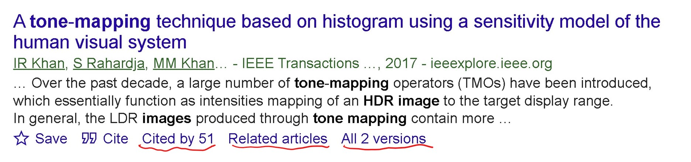

Search for relevant articles on different websites. The most useful perhaps will be Google Scholar. Rephrase your search keywords and repeat the search a few times. Google Scholar gives you options to sort the results based on relevance and date. You can select a custom range to view the articles published in a certain period.
Google Scholar presents the results in the form:

Note three underlined items at the bottom. If you click on “Cited By”, it will open a list of all articles which cited this paper. They will be relevant works but more recent. You can also click on “Related articles” to see some other similar results. Clicking on “All n versions”, you have a good chance to find an electronic copy online somewhere. You should also look at the papers cited in the article to see old works related to the topic you are exploring.
If you are new to the topic read some review articles first. If you already have some knowledge, you can start by reading the latest article, or one published in the most prestigious journal/conference, or one which has a large number of citations, or one which sounds more relevant from the title and the abstract. Once you have collected and read enough articles (50 will be a good number), you can write the literature review section of your paper.
A literature review is not just about writing one or two sentences about each method. Ideally, you should give your criticism to them. A good literature review is where one paragraph ends by stating some issues of the described methods. The next paragraph (or sentence) should tell how some other method(s) resolved those issues. This would engage the reader. You can add your comments/criticism wherever necessary. When the review ends, the reader should have a clear picture of what issues have been resolved and which remain and how your paper fits in the larger picture, i.e., what issues it will resolve.
If you are in hurry and have a good knowledge of the subject, then you can write about a paper just by reading its abstract and conclusion sections. But I highly recommend you read the whole paper, or at least the introduction section. One good trick the experienced researchers use is to read the last one or two paragraphs of the introduction section. Usually, the authors summarize their contributions there.
Some authors prefer to write literature reviews in chronological order, i.e., the older methods are discussed first. A preferred way however is to categorize the methods based on something. For example, if you are writing about some problem that was addressed by both traditional and deep learning based techniques, you can group the works based on this criteria, and write one (or few) paragraphs about both categories.
You should also try to keep your paragraphs small. Taking the above example, if there are too many techniques using deep learning used to solve the problem, you can split them into further subgroups based on the architecture of the network. Similarly, if some techniques target better execution speed, by optimizing the code, or using hardware-based implementations, for example, you can make further subcategories based on that.
Usually, a bottom-up approach works well for making these categories/paragraphs. First, describe each technique in a small standalone paragraph of 1-2 sentences. Then scan through them and merge those which talk about something similar. Do this for several iterations until you reach your desired number of paragraphs. There is not a fixed number, but most of the papers have 4-5 paragraphs in the literature review section. In an 8-page paper, abstract + introduction + literature review should cover less than two pages.
If you are writing a review paper, the above-mentioned guidelines still apply to you. Instead of paragraphs, you will categorize the literature into sections/subsections and explain them in more detail. You can add a literature survey matrix (google this term for detailed description) and add some figures/charts of your own or copied from the original papers to explain the concepts discussed. A review paper is not just an extended literature review. It is desirable to include your criticism of the existing works. Therefore, review papers are usually written by experts in the field.